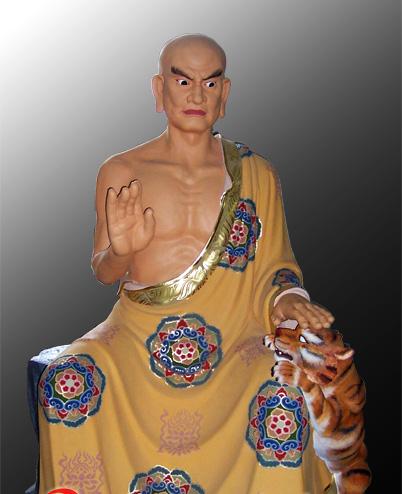

舍利弗是佛陀的十大弟子之一，每当佛陀讲解佛法时，舍利弗都随侍在佛陀的身边。
舍利弗又叫舍利弗多罗。他母亲的名字叫做舍利，而弗多罗是儿子的意思，舍利弗多罗就是舍利之子。
舍利弗原来信奉别的教派，手下有一百名弟子。修行了一阵子之后，他忽然觉得茫然无所皈依，找不到人生的真义。正在傍徨苦闷的时候，巧遇佛陀的弟子阿说示比丘，阿说示是最初皈依佛陀的五比丘之一，他有庄严的态度，威仪的行止，舍利弗一见，心中非常惊奇，并向阿说示比丘请法。
舍利弗从阿说示的口中，听到佛陀及其教法，像天崩地裂一般，心中对宇宙人生积聚的疑云，也一扫而空，并且和阿说示比丘约定，一定要去拜访佛陀。
舍利弗回到自己的住处，又把阿说示口中的佛陀和教法转述给好朋友目犍连，不单是讲话的舍利弗自己边说边感动，就连听话的目犍连，都不禁感动得涔然泪下！
第二天，舍利弗和目犍连带领二百弟子，一同到竹林精舍皈投在佛陀座下，他们觉得自己遇到了真正的老师。
《阿含经》中说：‘智慧无穷，诀了诸疑，所谓舍利弗比丘是。’舍利弗在所有弟子中有智慧第一的美誉。
《大智度论》则是把舍利弗比拟成‘世世心坚不可动’的一条毒蛇。据佛陀说，以前有一个国王被毒蛇咬到了，生命垂危，四处求医诊治。医生认为要想解毒，只有让这条毒蛇亲自为国王的伤口吸毒，于是在地上设了一个火盆，里头烧著熊熊烈火，然后把这条蛇捉来，叫它吸吭国王的伤口，否则就把它投入火中烧成灰烬。不过毒蛇坚决不肯吸吮伤口，宁愿跳入火中烧死。舍利弗对于自己认定的事绝不反悔，哪怕烈火焚身也丝毫不动摇心志，的确是个意志坚定的人。
关于舍利弗，在经典上还有一则很有名的故事：
舍利弗，本来是一位小乘的阿罗汉，后来，他认为小乘属于自利，发出离心，只求自己了生脱死；而行菩萨道，救人救世，可以解除别人的痛苦。因此他发了大心，要修学菩萨行，利益众生，如果众生有什么苦难和需求，他一定要满足人家的要求。正如佛经说的：‘不为自己求安乐，但愿众生得离苦。’他要实践菩萨的这种利他的精神。
舍利弗发了这个大愿，感动了天神。天神是有他心通的，于是他盘算一番，暗中道：‘好！舍利弗要做菩萨，我得去试一试他。’
于是这天人就从天上下来，摇身一变，变成一个孝子，在路旁嚎啕大哭。
舍利弗看见他哭得这么伤心，不禁生起了悲悯心，说：‘年轻人，你为什么这样悲伤呢？我是个修学菩萨道的人，你有什么困难，不妨跟我说，我一定尽力帮助你。’
‘不必说了，你没有办法做到的！’孝子说道。
‘你不妨讲一讲嘛！我能够做得到的，一定帮你的忙。’
这年轻人听到舍利弗说得如此诚恳，心中又是一阵抽痛，最后才说：‘唉！我妈妈得了绝症，看过了医生，但这医生问的药方好奇怪，什么药引子他不好放，却说需要人的眼睛，而且又是修行人的眼睛，我想：谁不爱惜自己的眼睛？谁愿意施舍给我呢？这件事怎么办得到呢？我只有眼睁睁地看著妈妈死掉，怎不叫我感到伤心痛苦呢？’
‘你可以想办法啊！这件事情虽然很困难，但是世尊说讲过：“我们要成佛，必须经过三大阿僧祇劫的修持，要能够舍弃我们的头目髓脑。”你既然需要一只眼睛，我就布施给你吧！’
说著，舍利弗下了决心，马上把自己的左眼挖下，送上去说：‘年轻的朋友，这眼睛给你，带回去给你母亲治病吧！’
‘别急啊！我话还没有讲清楚哩！医生说我妈妈需要的是右眼，不是左边的那一只，你搞错了！’
啊！听了这话，舍利弗的心顿时冷了半截，但随著念头一转，我既然发了菩萨心，要行菩萨道，好吧！救人救到底，索性把右边的眼睛再挖下来给他。
为了要做菩萨，舍利弗就忍痛再牺牲右眼，送给年轻人，自己却成为瞎子。
这年轻人接过眼睛，马上用鼻子嗅了一嗅，说：‘哎呀！这眼睛怎么腥味这样重呀！’
又说道：‘人家说一个真正有修行的人，他的眼睛一定是很香的，我闻到你的眼睛，真是腥得要命，我妈妈怎么可以吃呢？’
于是，他把眼睛往地上一摔，按著又用脚把它踩碎。
舍利弗虽然已经是个瞎子，看不到他的动作，却可以听得到他的举动，心也被他踏碎了，非常感叹地说：‘众生真是难度啊！要做菩萨，可没有那么简单，我的两只眼睛都施舍丁，他居然还嫌弃，说是腥味重。啊！我不当菩萨了，还是做小乘人，自己了生脱死算啦！’
这时候，天人现出原形，说：‘啊！舍利弗尊者，你真是太伟大了！你真正是为了救众生啊。你有这一份慈悲心，佛菩萨和龙天护法，会保佑你的，你的眼睛一定可以复明。’
就这样，舍利弗的双眼顿时就复明了，又继续地发大心，行菩萨道。
在佛陀十大弟子中，舍利弗有著‘智慧第一’的美誉，因为舍利弗在理解佛法教义的深度与广度，以及在教导解脱道的能力上，仅次于佛陀。虽然在佛教经典中并没有关于舍利弗的完整传记，但我们仍然可以从分散在各经典和论与中，所提到的有关舍利弗的种种事迹，而对舍利弗有所了解。因为舍利弗的生活与佛陀及教团的生活密切关联，他扮演著很重要的角色。此外，在许多场合里，舍利弗就是扮演著领导的角色，他是位能循循善诱的教师和优良的楷范，也是位仁慈与体贴他人的朋友，是僧团的守护者，更是佛陀教诲的忠实保存者，这些特性为他赢得‘佛法护卫’（Dhamma-Senapati）的头衔。
舍利弗，有著深选的智慧与高贵的本性，是佛陀的真实弟子。